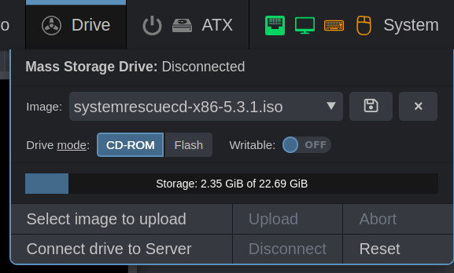
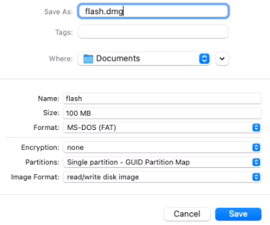

Mass storage drive
This powerful feature that is available on all PiKVM V2+ devices. It allows PiKVM to emulate a virtual CD/DVD or Flash Drive for the target host which will be available even in BIOS/UEFI when you need live disk to revive the OS or even reinstall it.
Warning
This document is relevant for KVMD >= 4.49.
Also since this version, PiKVM supports DVD emulation!
If you are using an older version, please update the PiKVM OS:
Updating PiKVM OS
To update, run following commands under the root user:
[root@pikvm ~]# pikvm-update
If you encounter an error like:
[root@pikvm ~]# pikvm-update
bash: pikvm-update: command not found
It's most likely you have an old OS release. You can update the OS as follows:
[root@pikvm ~]# rw
[root@pikvm ~]# pacman -Syy
[root@pikvm ~]# pacman -S pikvm-os-updater
[root@pikvm ~]# pikvm-update
Next time you will be able to use the usual method with pikvm-update.
Take a look at the Drive menu in the Web UI |
|---|
|  |
{kind=link}
The following actions are available here:
- Uploading an image to the internal storage of PiKVM.
- Selecting an image to connect to the target host.
- Changing the media type and write availability mode.
- Downloading an image from the PiKVM storage.
- Drive connection management and much more.
Warning
Never turn off the power of the PiKVM while the image is being uploaded or while the image is connected to the target host in write mode. This may cause file corruption.
The rest of the time, power off is safe because the PiKVM filesystem will be in read-only mode.
Changing the media type between CD/DVD and Flash is possible only when the device is reconnected
On PiKVM V3 and V4, this can be done using the System -> Connect main USB switch in the Web UI.
In this case, the media type is determined at the time of connecting the image, and not by clicking on the switch. The switch affects the settings of the future connection. For non-V3/V4 devices, you need to either reboot your target host or otherwise reinitialize the drive.
Manual images uploading¶
PiKVM stores images in a special memory card partition mounted in /var/lib/kvmd/msd.
Most of the time, the partition is read-only, and is remounted for writing automatically if the appropriate drive emulation mode is enabled, or to upload a new image. This protects the data from damage in the event of a sudden loss of power.
Step by step: Manual image uploading using SCP or rsync
-
Remount internal storage to read-write mode manually:
[root@pikvm ~]# kvmd-helper-otgmsd-remount rw -
Upload the image(s) to
/var/lib/kvmd/msdusingscpor some other tool. -
Remount internal storage back to safe read-only mode:
[root@pikvm ~]# kvmd-helper-otgmsd-remount ro
Tip
An HTTP API for Mass Storage management is also available for advanced use.
Writable Flash Drive¶
When emulating Flash Drive on PiKVM, you can allow the target host to write files to the image. After stopping the drive, this image can be downloaded and opened on the local host. This is useful if you need to get some files from the target host.
The file system image for the virtual Flash Drive must be prepared in advance. This can be done either on the local host or in the PiKVM console.
Here some options:
Step by step: Creating simple FAT32 image on PiKVM
-
Remount internal storage to read-write mode manually:
[root@pikvm ~]# kvmd-helper-otgmsd-remount rw -
Create an empty image file in
/var/lib/kvmd/msd(this is the internal storage of PiKVM images) of desired size (512MB in this example) and format it to FAT32:[root@pikvm ~]# fallocate -l 512M /var/lib/kvmd/msd/flash.img [root@pikvm ~]# loop=$(losetup -f) [root@pikvm ~]# echo -e 'o\nn\np\n1\n\n\nt\nc\nw\n' | fdisk /var/lib/kvmd/msd/flash.img [root@pikvm ~]# losetup -P $loop /var/lib/kvmd/msd/flash.img [root@pikvm ~]# mkfs.vfat ${loop}p1 [root@pikvm ~]# losetup -d $loop [root@pikvm ~]# chmod 666 /var/lib/kvmd/msd/flash.img -
Remount internal storage back to safe read-only mode:
[root@pikvm ~]# kvmd-helper-otgmsd-remount ro
Note
- For PiKVM V3+ you'll need to toggle the USB connection using the Web UI: Switch
System -> Connect Main USBto off, then on. - For V2 you'l need to reboot the target host.
Step by step: Creating an image on a local macOS
-
Open
Disk Utility. -
Click menu
File -> New Image -> Blank Image. -
Set some options:
FormatandPartitionsare very important -
Click
Save. The drive will automatically be mounted. -
Copy files (such as BIOS updates) onto the new image (via terminal or drag and drop in Finder).
-
Eject image.
-
Rename the image file from
.dmgto.img. -
Upload the image to PiKVM.
{kind=link}
The image flash.img now should be available in the Drive menu in Web UI.
Change drive mode to the Flash position and enable Writable switch.
Connect the image, do whatever is necessary, with files, and disconnect it.
The modified image containing your files can be downloaded to a local host
by selecting it from the menu and clicking the floppy disk icon.
NFS storage¶
It is possible to create a shared image storage for an entire fleet of PiKVMs using NFS.
If you have some shares, you can easily connect them to PiKVM by creating mount points and adding relevant records to /etc/fstab.
At the same time, you will be able to upload images via PiKVM Web UI to NFS, and still use local storage.
Step by step: Connecting NFS storage
-
Update OS:
Updating PiKVM OS
To update, run following commands under the
rootuser:[root@pikvm ~]# pikvm-updateIf you encounter an error like:
[root@pikvm ~]# pikvm-update bash: pikvm-update: command not foundIt's most likely you have an old OS release. You can update the OS as follows:
[root@pikvm ~]# rw [root@pikvm ~]# pacman -Syy [root@pikvm ~]# pacman -S pikvm-os-updater [root@pikvm ~]# pikvm-updateNext time you will be able to use the usual method with
pikvm-update. -
Make some preparations:
[root@pikvm ~]# rw [root@pikvm ~]# pacman -S nfs-utils [root@pikvm ~]# kvmd-helper-otgmsd-remount rw [root@pikvm ~]# mkdir -p /var/lib/kvmd/msd/NFS_Primary [root@pikvm ~]# mkdir -p /var/lib/kvmd/msd/NFS_Secondary [root@pikvm ~]# kvmd-helper-otgmsd-remount ro -
Add NFS shares to
/etc/fstab:server:/srv/nfs/NFS_Primary /var/lib/kvmd/msd/NFS_Primary nfs vers=3,timeo=1,retrans=1,soft,nolock 0 0 server:/srv/nfs/NFS_Secondary /var/lib/kvmd/msd/NFS_Secondary nfs vers=3,timeo=1,retrans=1,soft,nolock 0 0 -
Perform
rebootto apply all changes.
Make sure that the kvmd user has the read access from these directories. You can also give the write access if needed.
For the best performance, it is required to ensure reliable connectivity with NFS server and use minimum timeo and retrans values.
Using the soft option is mandatory, nolock is recommended.
Note if an image is added to the NFS storage from the outside, PiKVM will not be able to track this event, so it is required to use
Drive -> Reset in the Web UI to update the list of images.
Configuring an NFS server is beyond the scope of this guide.
Samba/CIFS storage¶
If you already have a local samba server e.g. Unraid or another NAS you can use the isos from there.
To refresh the list of available isos on the share it is currently necessary to reboot.
Step by step: Connecting Samba/CIFS storage
-
Update OS:
Updating PiKVM OS
To update, run following commands under the
rootuser:[root@pikvm ~]# pikvm-updateIf you encounter an error like:
[root@pikvm ~]# pikvm-update bash: pikvm-update: command not foundIt's most likely you have an old OS release. You can update the OS as follows:
[root@pikvm ~]# rw [root@pikvm ~]# pacman -Syy [root@pikvm ~]# pacman -S pikvm-os-updater [root@pikvm ~]# pikvm-updateNext time you will be able to use the usual method with
pikvm-update. -
Make some preparations:
[root@pikvm ~]# rw [root@pikvm ~]# pacman -S cifs-utils [root@pikvm ~]# kvmd-helper-otgmsd-remount rw [root@pikvm ~]# mkdir -p /var/lib/kvmd/msd/isos [root@pikvm ~]# kvmd-helper-otgmsd-remount ro -
Add Samba/CIFS shares to
/etc/fstab://192.168.0.1/isos /var/lib/kvmd/msd/isos cifs guest,_netdev,nofail 0 0 -
Perform
rebootto apply all changes.
exFAT filesystem warning¶
Using the existing USB ports you can reduce writes to the internal SSD card by storing
images on a USB thumb drive. This is mounted as would NFS or Samba, above. As recent
drives are starting to come formatted with exfat instead of fat or NTFS, the
linux kernel will default to 'root' ownership of the mountpoint. This means the
volume will be visible in the 'Media' menu, but will be marked as [read-only], without
any obvious reason.
The correct /etc/fstab entry for a USB drive that presents as /dev/sda1 with an
exfat filesystem is:
```fstab
/dev/sda1 /var/lib/kvmd/msd/usb exfat auto,nofail,rw,umask=0000 0 0
```
This says to mount it automatically, do not fail if it's missing, mount it read/write by default, and allow all users and groups access to it.
Don't forget to create /var/lib/kvmd/msd/usb directory:
[root@pikvm ~]# kvmd-helper-otgmsd-remount
[root@pikvm ~]# mkdir -p /var/lib/kvmd/msd/usb
[root@pikvm ~]# kvmd-helper-otgmsd-remount ro
Multiple drives¶
By default, PiKVM creates one virtual drive for Mass Storage emulation. However, if necessary, you can create additional ones and manage them using console utility. This is useful if there is a need to boot the target host from the first drive, and then connect the second to exchange files.
Note
The first virtual drive is available for management both in the Web UI (the Drive menu)
and using the kvmd-otgmsd console utility (see below).
Extra drives are controlled only from console.
The issue of additional drives concerns compatibility. There is an assumption that multiple drives on the same USB may confuse some BIOS/UEFI. So for paranoid reasons, this feature requires manual activation. It is recommended setting up the drives in advance, making sure that booting from ISO CD or Flash is still working with your specific target host, and then using the drives as planned.
Also additional drives consumes extra endpoints, read more under the spoiler:
USB limitations
Each emulated USB device consumes a limited hardware resource called endpoints.
Short info: by default, you can add only one additional USB device.
To get more information about the endpoints, add more devices, and flexibly manage the configuration on the fly, see here.
So, to add a second virtual drive, follow this:
Step by step: Enabling an additional drive
-
Switch the filesystem to read-write mode:
[root@pikvm ~]# rw -
Edit
/etc/kvmd/override.yamland add the extra drive config section:otg: devices: drives: enabled: true # Set it to true to enable count: 1 # +1 drive, default value default: # Default configuration for the all extra drives cdrom: false # Default value (false for the generic flash drive, true for CD/DVD) rw: false # Read-only by defaultThe
countparameter determines the number of additional drives (remember the limit on endpoints). Each of the drives will be created with the same initial parameters described in thedefaultsection. -
Perform reboot:
[root@pikvm ~]# reboot
Manual drives management¶
The kvmd-otgmsd console utility is used to manage additional (and the first main one) drives.
The full list of options can be found by running kvmd-otgmsd --help.
Step by step: Creating the flash drive image to get some files from the target host
-
Switch the filesystem to read-write mode:
[root@pikvm ~]# rw -
Create an empty image file with desired size (1GB in this example):
[root@pikvm ~]# fallocate -l 1000M /root/flash.img -
Connect it to the drive
1(the creation process is described in the previous section):[root@pikvm ~]# kvmd-otgmsd -i 1 --set-rw=1 --set-cdrom=0 --set-image=/root/flash.imgNote
-
Index
0represents the main drive that is controlled via the Web UI and API. -
If
--set-cdrom=1, the drive will work as CD-ROM for small images, and as DVD-ROM for big. Please note that CD/DVD can't be writable (you should use--set-rw=0in this case).
-
-
On this step, you will be able to access the flash drive from the target host and format the it in the usual way.
-
View the drive state:
[root@pikvm ~]# kvmd-otgmsd -i 1 Image file: /root/flash.img CD/DVD flag: no RW flag: yes -
To disable the flash drive and view the files on it from the PiKVM, run:
[root@pikvm ~]# kvmd-otgmsd -i 1 --unlock --eject -
Don't forget to remount the root filesystem to read-only mode:
[root@pikvm ~]# ro -
You can download the resulting image via SCP or mount it as a loop device on the PiKVM:
[root@pikvm ~]# mount -o loop /root/flash.img /mnt [root@pikvm ~]# ls /mnt [root@pikvm ~]# umount /mnt
Tip
The main drive can also be switched to read-write mode, this can be done from the Web UI.
In this case, the image will have to be prepared outside of PiKVM, and upload it to use, then download it back to your local host for files extraction.
Disabling Mass Storage¶
In rare cases, it may be necessary to disable Mass Storage emulation if the BIOS/UEFI does not recognize it correctly and even refuses to work with USB keyboard and mouse.
Step by step: Permanent disabling Mass Storage
-
Switch the filesystem to read-write mode:
[root@pikvm ~]# rw -
Edit
/etc/kvmd/override.yamland add the extra drive config section:kvmd: msd: type: disabled -
Perform reboot:
[root@pikvm ~]# reboot
Tip
As an alternative method may be to use the dynamic USB configuration, which allows you to temporarily disable any of the emulated devices, including Mass Storage Drive.
Big DVD images on old PiKVM¶
Since KVMD 4.49, PiKVM is able to emulate DVD images.
Before that, users had to use Ventoy and other utilities to pre-convert large DVD images such as the official Windows ISO to Flash.
We strongly recommend updating the PiKVM OS to simplify your Mass Storage experience when using DVDs:
Updating PiKVM OS
To update, run following commands under the root user:
[root@pikvm ~]# pikvm-update
If you encounter an error like:
[root@pikvm ~]# pikvm-update
bash: pikvm-update: command not found
It's most likely you have an old OS release. You can update the OS as follows:
[root@pikvm ~]# rw
[root@pikvm ~]# pacman -Syy
[root@pikvm ~]# pacman -S pikvm-os-updater
[root@pikvm ~]# pikvm-update
Next time you will be able to use the usual method with pikvm-update.
Anyway, you can still view all these legacy recipes.